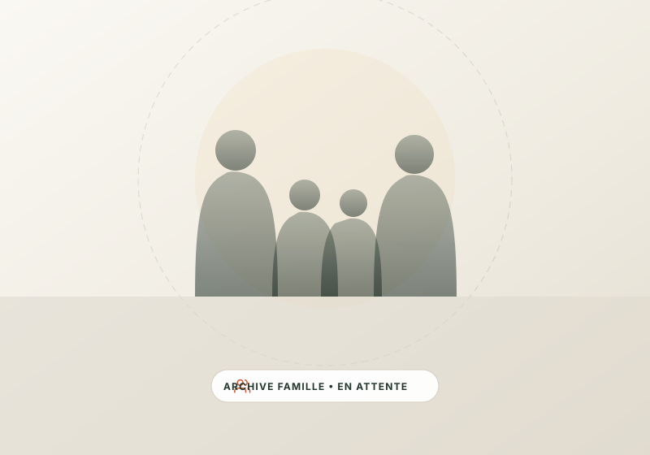

Celebrating 180+ Families: The Generational Journey of Charlotte's African Diaspora
When newcomer families step off airplanes into North Carolina, they carry centuries of oral history, resilience, and boundless hope. But they also confront systems that can render them invisible. How community-rooted mentorship is rewriting the immigrant story in East Charlotte.
B
By Binti Muzuri Amisi
Founder & Executive Director
